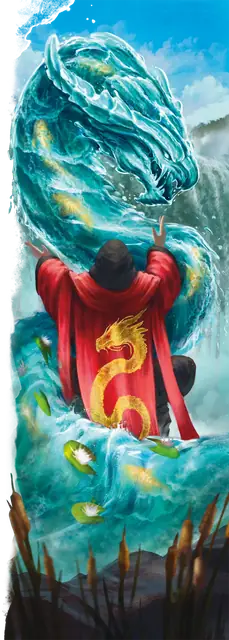

Водная аномалия
Water Weird
Большой Элементаль, Нейтральный

Класс Защиты 13 Инициатива +3 (13)
Хиты 65 (10к10 + 10)
Скорость 5 футов, Плавания 60 футов
| мод | спас | ||
|---|---|---|---|
| СИЛ | 17 | +3 | +3 |
| ЛОВ | 16 | +3 | +3 |
| ТЕЛ | 13 | +1 | +1 |
| мод | спас | ||
|---|---|---|---|
| ИНТ | 11 | +0 | +0 |
| МДР | 10 | +0 | +0 |
| ХАР | 10 | +0 | +0 |
Сопротивление урону Огонь
Иммунитеты Яд; Бессознательный, Истощение, Окаменевший, Опрокинутый, Опутанный, Отравленный, Парализованный, Схваченный
Чувства пассивное Восприятие 10, Слепое зрение 30 футов
Языки понимает Первичный, но не говорит
Опасность 3 (700 опыта; БВ +2)
Особенности
Невидимость в воде. Водная аномалия Невидима, пока полностью погружена в воду.
Связь с водой. Водная аномалия умирает, если покидает воду, к которой привязана, или если эту воду уничтожить.
Действия
Прилив. Бросок рукопашной атаки: +5, досягаемость 10 фт. Попадание: 13 (3к6 + 3) урона Холодом. Если цель Среднего размера или меньше, она становится Схваченной (Сл высвобождения от захвата 13); пока захват не окончен, она также Опутана.
Бонус мастерства +2
Среда обитания Город, Подземье
Сокровища Любые
Водная аномалия
Слуга первозданной магии
Водные аномалии — змееподобные духи природы, которые охраняют пруды, фонтаны и магические водоёмы. Когда эти существа погружены в воду, их невозможно отличить от окружающей жидкости. Но стоит нарушить их границы — и они поднимаются в виде ожившего водяного столба, слегка напоминающего змею или дракона. Как правило, одного их появления достаточно, чтобы обратить врагов в бегство. Если же дело доходит до боя, водные аномалии обвиваются вокруг жертвы и сжимают её своими водяными кольцами.
Водные аномалии могут веками охранять одно и то же место и узнать многое об окружающем мире. Некоторых из них считают оракулами, которые отвечают на вопросы, заданные на первичном языке. Водные аномалии не говорят, но могут общаться с помощью всплесков воды или погружённых в водоём предметов.